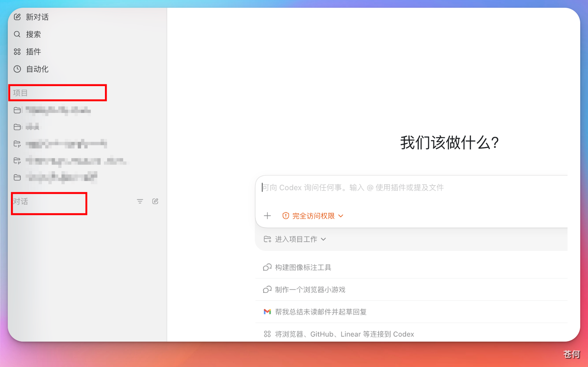
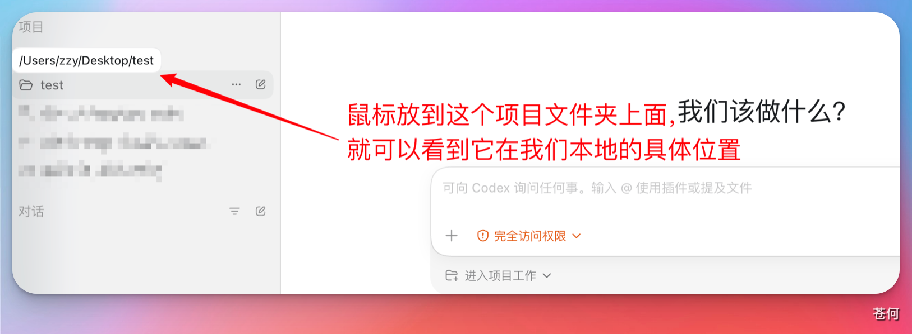
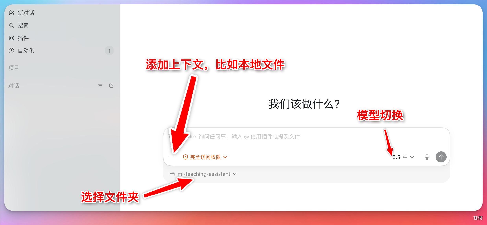
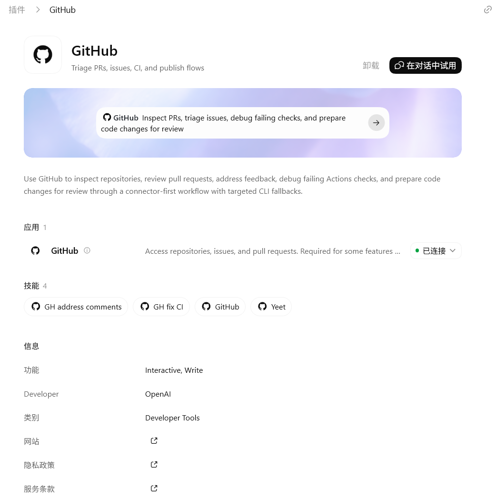
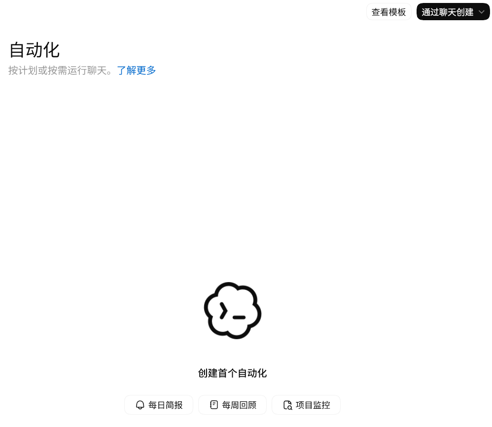
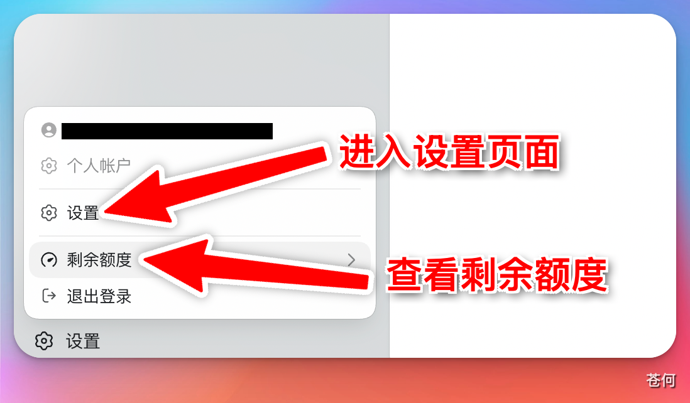
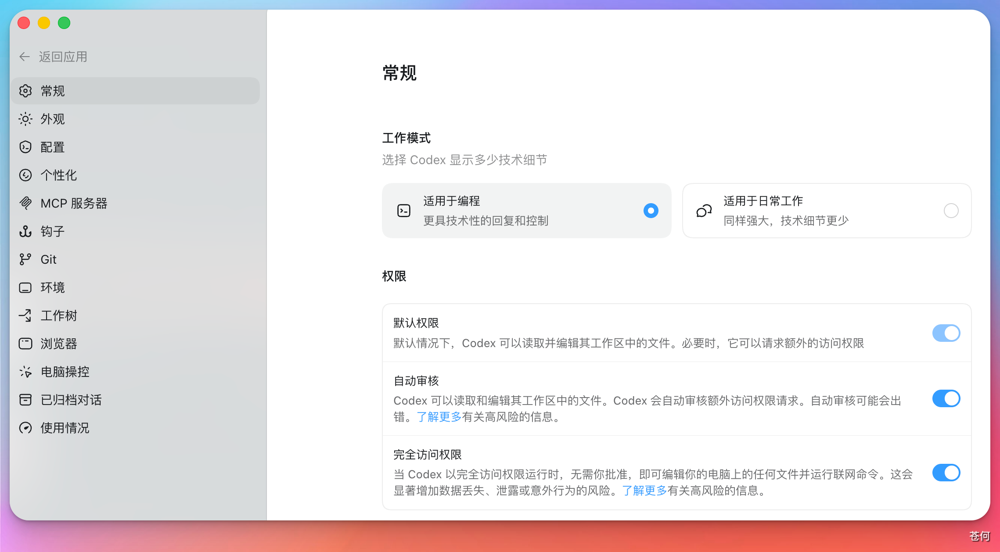

03 入门准备
了解 Codex 基本组成
打开 Codex，左侧栏就两个入口：Chat（对话） 和 Project（项目）。
来源：CodexGuide 原文。原页面标注 MIT Licensed；原图与说明按页面内容保留。
了解 Codex 基本组成
💡 最后核对 官方资料最后核对日期：2026-06-13。本章参考 Codex App docs、Settings、Agent approvals and security 等官方资料。界面说明以当前 Codex 桌面 App 实际版本为准，不同系统、地区、客户端版本和账号套餐下显示可能略有差异。
认识对话和项目
打开 Codex，左侧栏就两个入口：Chat（对话） 和 Project（项目）。

Chat 对话
和 ChatGPT 网页版差不多，随手问问题。各对话互不相干，也不共享文件夹。
Project 项目
需要动本地文件时用它——写代码、改文档、做 PPT 都可以。项目里的所有对话共用同一个文件夹，方便一起管理。

在项目里下达指令后，Codex 的修改会直接应用到你本地文件夹中的文件。
对话框功能说明
Codex 的对话框和 ChatGPT 网页版类似，支持：
- 添加上下文：可以附加文件、截图或其他参考内容
- 切换模型：在不同模型之间切换
并额外支持：
- 控制权限：设定 Codex 在当前任务中的操作权限
- 选择工作目录：指定 Codex 在哪个本地文件夹下执行任务

插件与技能
包括 OpenAI 官方定制或推荐的插件与技能。

Skills 默认包含 Skills Creator、Skills Installer、OpenAI Docs 等技能，用来创建、安装技能，或获取 OpenAI 官方最新文档。在对话框中使用 $ 即可调用 Skills：

插件是 OpenAI 定义的外部工具入口，也可能包含 Skills、MCP、脚本等能力。常见插件包括 Computer Use、Browser Use、PPT、Docs、Excel、Slack、GitHub 等。不同插件可能有额外配置。

自动化
Codex 支持自动化执行任务，包括使用 MCP 服务器、钩子和插件等。

自动化会执行你指定的命令，你可以指定工作树、项目地址和定时的间隔。在下图中输入你的指令，并且配置即可。
💡 注意 自动化任务以默认沙盒设置运行。若工具调用需修改工作空间外文件、访问网络或操作电脑应用，该操作将执行失败。可通过规则选择性允许特定命令在沙盒外运行。
设置面板
点击左下角头像或设置图标可以打开设置面板。


左侧是设置菜单。里面包含丰富的配置选项，详情如下：
❗ 先用默认配置 截图里的开关只是示例。尤其是「完全访问权限」、浏览器控制、电脑操控、钩子和 MCP 服务器，先按任务逐步开启。配置选项可参考如下。
设置说明
大部分情况下都是保持默认配置即可。配置很多时候都是按需开启。
个人
常规
- 工作模式：编程模式保留更多技术细节；日常工作模式更适合问答、整理和写作。
- 权限：提供三个权限选项。 默认权限：在沙盒环境中运行，安全但部分操作可能受限，例如访问工作目录外的文件、修改本机环境变量。自动审核：也称“替我审批”，部分越权命令可以在模型审核认定安全后自动使用，无须用户授权。完全访问权限：只在明确需要时临时开启，例如启用 computer use。
- 常规：可配置：文件打开位置、集成终端 Shell、Codex UI 的语言、底部面板、速度（指模型生成的速度）、代码审查、建议提示、从其他AI应用中导入工作内容，打开源许可证。
通常而言，模型生成速度默认标准即可。仅在Pro 5x及以上的套餐才会推荐启用快速模式（消耗更多配额）。 - 编辑器：可配置：上下文窗口使用情况、跟进行为、需按 ^ + 回车键发送长文本提示。
- 弹出窗口：可配置：弹出窗口快捷键、默认使用无项目聊天。
- 听写：可配置：按住听写快捷键、切换听写快捷键、保持听写栏可见、听写词典、最近的听写记录。
- 通知：可配置：轮次完成通知、权限通知、问题通知。。
推荐配置选项：通常而言，推荐开启自动审核、标准速度、始终轮次完成通知
个人资料
查看账号资料、Token 活动
- 资料：头像、名称、用户名。
- 用量：活动、token、任务记录等个人统计。
推荐配置选项：保持默认即可
外观
调整 UI 和配色方案。可配置：主题导入、主题复制、强调色、背景、前景、UI 字体、代码字体、半透明侧边栏、对比度、指针光标、动态效果、字号、差异标记、宠物外观。
推荐配置选项：按照自己的喜好即可。
配置
管理 agent 的执行边界和config.toml的配置
- 自定义 config.toml 设置：Codex 的核心配置文件。详情见：config.toml 参考
- 工作空间依赖项：可配置 Codex 安装随附的Node.js和Python、进行诊断和重置并安装工作空间。
推荐配置选项：批准策略用按请求；沙盒用只读或工作区写入；联网按任务开启。
个性化
选择 Codex 的性格，配置自定义指令和记忆。
推荐配置选项：自定义指令写跨项目偏好。
键盘快捷键
查看、搜索和重设快捷键。
推荐配置选项：保持默认。后续根据需要自定义修改。
使用情况和计费
查看额度和套餐状态。
集成
MCP 服务器
给 Codex 接入外部工具和上下文，比如文档、浏览器、设计工具或内部系统。
推荐配置选项：根据项目需要配置MCP。更多请看MCP,SKILLS和SubAgents。
浏览器
让 Codex 打开网页、点击、输入、截图和检查页面状态。需要在插件处下载。可配置：清除浏览数据、批注截图、打开网站前审批、网站权限。
推荐配置选项：通常始终包含批注截图，审批则视情况选择。
电脑操控
让 Codex 看屏幕、点应用、输入内容。Codex会读取本机上已经安装的APP，然后通过视觉识别和脚本发起键鼠操作。需要在插件处下载。
需要注意：电脑操作会接管你的电脑，一般而言AI接管过程中不建议用户操作。
编码
钩子
在 Codex 的生命周期事件中运行自定义脚本。可用于日志、提示检查、记忆整理、验证检查和按目录调整提示。详情见：Hooks。
推荐配置选项：默认无需配置。当需要搭建工作流时再考虑。
连接
管理设备远程连接。可通过手机/SSH的方式远程连接Codex。
Git
让 Codex 按你的偏好处理 Git。可配置：分支前缀、PR 合并方法、侧边栏 PR 图标、强制推送、草稿 PR、旧工作树自动清理、保留数量、提交信息和 PR 标题/描述生成指令。
推荐配置选项：保持默认即可。视实际开发需要而修改。
环境
指定一个项目目录，告诉 Codex 这个项目该怎么构建和运行。可配置：设置脚本，清理脚本，自定义操作。例如安装依赖、构建项目、启动开发服务器和运行测试。
推荐配置选项：当你需要频繁地使用命令来打开一个项目时，考虑配置。
工作树
让 Codex 为不同任务准备独立的工作区。适合同时修不同问题、比较不同方案，或把长任务放到一边继续做别的事。使用前先确认当前改动已经保存或提交。
推荐配置选项：熟悉 Git 分支后再用。任务结束后清理不用的工作树。
已归档
已归档对话
收起不再活跃的对话。可恢复。
💡 注意 设置页里的名称会随着客户端迭代变化。遇到和教程截图不一致时，先看 OpenAI 官方的 Codex App docs，再回到本教程查中文场景解释。